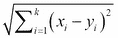

在本章中，我们将介绍以下配方:
分类用于根据从训练数据集构建的分类模型来识别新观察值(测试数据集)的类别，其中类别是已知的。与回归类似，分类被归类为监督学习方法，因为它采用训练数据集的已知答案(标签)来预测测试数据集的答案(标签)。回归和分类的主要区别在于，回归用于预测连续值。
与此相反，分类用于识别给定观察的类别。例如，可以根据历史价格使用回归来预测给定股票的未来价格。但是，我们应该使用分类方法来预测股价是上涨还是下跌。
在这一章中，我们将说明如何使用R来执行分类。我们首先从流失数据集构建训练数据集和测试数据集，然后应用不同的分类方法对流失数据集进行分类。在下面的配方中，我们将介绍使用传统分类树和条件推理树的基于树的分类方法、基于懒惰的算法以及使用训练数据集建立分类模型的基于概率的方法，然后使用该模型来预测测试数据集的类别(类标签)。我们还将使用混淆矩阵来衡量性能。
执行以下步骤将流失数据集分为训练数据集和测试数据集:
C50包中检索流失数据集: > install.packages("C50") > library(C50) > data(churn) str读取数据集的结构:> str(churnTrain)
state、area_code、account_length属性，这些属性不适合分类特征: > churnTrain = churnTrain[,! names(churnTrain) %in% c("state", "area_code", "account_length") ] > set.seed(2) > ind = sample(2, nrow(churnTrain), replace = TRUE, prob=c(0.7, 0.3)) > trainset = churnTrain[ind == 1,] > testset = churnTrain[ind == 2,]
dim探索训练和测试数据集的维度:> dim(trainset) [1] 2315 17 > dim(testset) [1] 1018 17
在这个配方中，我们使用电信客户流失数据集作为我们的示例数据源。数据集包含20个变量和3333个观察值。我们希望建立一个分类模型来预测客户是否会流失，这对电信公司来说非常重要，因为获得一个新客户的成本远远高于留住一个客户的成本。
在建立分类模型之前，我们需要首先对数据进行预处理。因此，我们将来自C50包的流失数据加载到R会话中，变量名为churn。当我们确定属性如state、area_code和account_length对于建立分类模型不是有用的特征时，我们移除这些属性。
在对数据进行预处理后，我们将其分别分成训练数据集和测试数据集。然后，我们使用一个样本函数随机生成一个序列，该序列包含70%的训练数据集和30%的测试数据集，其大小等于观察值的数量。然后，我们使用生成的序列将流失数据集分成训练数据集trainset和测试数据集testset。最后，通过使用dim函数，我们发现3333个观察值中的2315个被归类到训练数据集trainset，而另外1018个被归类到测试数据集testset。
您可以将训练和测试数据集的拆分过程合并到split.data函数中。因此，通过调用此函数并在参数中指定比例和种子，您可以轻松地将数据分成两个数据集:
> split.data = function(data, p = 0.7, s = 666){
+ set.seed(s)
+ index = sample(1:dim(data)[1])
+ train = data[index[1:floor(dim(data)[1] * p)], ]
+ test = data[index[((ceiling(dim(data)[1] * p)) + 1):dim(data)[1]], ]
+ return(list(train = train, test = test))
+ }
分类树基于一个或多个输入变量使用分裂条件来预测分类标签。分类过程从树的根节点开始；在每个节点，该过程将检查输入值是否应该根据分裂条件递归地继续到右边或左边的子分支，并且当遇到决策树的任何叶(终端)节点时停止。在这个菜谱中，我们将介绍如何对客户流失数据集应用递归分区树。
您需要通过将客户流失数据集分为训练数据集(trainset)和测试数据集(testset)来完成前面的配方，每个数据集应该正好包含17个变量。
执行以下步骤将流失数据集分为训练数据集和测试数据集:
rpart包:> library(rpart)
rpart函数构建分类树模型:> churn.rp = rpart(churn ~ ., data=trainset)
churn.rp检索分类树的节点明细:> churn.rp
printcp函数检查复杂度参数:> printcp(churn.rp) Classification tree: rpart(formula = churn ~ ., data = trainset) Variables actually used in tree construction: [1] international_plan number_customer_service_calls [3] total_day_minutes total_eve_minutes [5] total_intl_calls total_intl_minutes [7] voice_mail_plan Root node error: 342/2315 = 0.14773 n= 2315 CP nsplit rel error xerror xstd 1 0.076023 0 1.00000 1.00000 0.049920 2 0.074561 2 0.84795 0.99708 0.049860 3 0.055556 4 0.69883 0.76023 0.044421 4 0.026316 7 0.49415 0.52632 0.037673 5 0.023392 8 0.46784 0.52047 0.037481 6 0.020468 10 0.42105 0.50877 0.037092 7 0.017544 11 0.40058 0.47076 0.035788 8 0.010000 12 0.38304 0.47661 0.035993
plotcp function to plot the cost complexity parameters:> plotcp(churn.rp)
图1:成本复杂性参数图
summary函数来检查构建好的模型:> summary(churn.rp)
在这个方法中，我们使用来自rpart包的递归分区树来构建一个基于树的分类模型。递归划分树包括两个过程:递归和划分。在决策归纳过程中，我们必须考虑一个统计评估问题(或简单的是/否问题),根据评估结果将数据划分到不同的分区。然后，由于我们已经确定了子节点，我们可以重复执行分割，直到满足停止标准。
例如，对于 f1 是否小于 X 的问题，根节点中的数据(如下图所示)可以分为两组。如果是这样，数据被划分到左侧。否则，它将被拆分到右侧。然后，我们可以用 f2 是否小于 Y 的问题继续划分左侧数据:
图2:递归划分树
在的第一步中，我们用library函数加载的rpart包。接下来，我们使用churn变量作为分类类别(类标签)并使用剩余变量作为输入特征来构建分类模型。
在构建模型之后，您可以键入构建模型的变量名churn.rp，以显示树节点的详细信息。在打印的节点明细中，n表示样本大小，loss表示误分类成本，yval表示分类隶属度(在本例中为no或yes)，而yprob表示两个类别的概率(左边的值表示概率到达标签no，右边的值表示概率到达标签yes)。
然后，我们使用printcp函数打印所构建的树模型的复杂度参数。从printcp的输出中，应该可以找到复杂度参数CP的值，该值作为控制树的大小的惩罚。简而言之，CP值越大，分裂次数越少(nsplit)。输出值(rel错误)代表当前树的平均偏差除以空树的平均偏差。xerror值表示由10倍分类估计的相对误差。xstd代表相对误差的标准误差。
为了使CP(成本复杂度参数)表更具可读性，我们使用plotcp生成CP表的信息图。根据截图(步骤5)，底部的x轴表示cp值，y轴表示相对误差，上部的x轴显示树的大小。虚线表示标准偏差的上限。从截图中，我们可以确定当树的大小为12时，交叉验证错误最小。
我们也可以使用summary函数来显示函数调用，拟合树模型的复杂度参数表，变量重要性，这有助于识别对树分类最重要的变量(总计100)，以及每个节点的详细信息。
使用决策树的优点是它非常灵活并且易于解释。它既能处理分类和回归问题，还能处理更多问题；它是非参数的。因此，人们不必担心数据是否是线性可分的。至于使用决策树的缺点，就是容易有偏差和过拟合。但是，您可以通过使用条件推理树来克服偏差问题，并通过随机森林方法或树修剪来解决过拟合问题。
rpart、printcp和summary功能的更多信息，请使用help功能:> ?rpart > ?printcp > ?summary.rpart
C50是另一个包，它提供了决策树和基于规则的模型。如果你对这个包感兴趣，你可以在http://cran.r-project.org/web/packages/C50/C50.pdf查阅这个文件。需要通过生成一个分类模型来完成之前的配方，并将该模型分配到churn.rp变量中。
plot function and the text function to plot the classification tree:> plot(churn.rp, margin= 0.1) > text(churn.rp, all=TRUE, use.n = TRUE)
图3:分类树的图形显示
uniform, branch, and margin parameter to adjust the layout:> plot(churn.rp, uniform=TRUE, branch=0.6, margin=0.1) > text(churn.rp, all=TRUE, use.n = TRUE)
图4:调整分类树的布局
在这里，我们演示如何使用plot函数以图形方式显示分类树。plot函数可以简单地可视化分类树，然后您可以使用text函数向图中添加文本。
在图3 中，我们指定margin = 0.1作为参数，在边框周围添加额外的空白，以防止显示的文本被边距截断。它表明分支的长度显示了偏差下降的相对幅度。然后，我们使用text函数为节点和分支添加标签。默认情况下，text函数会在每次拆分时添加一个拆分条件，并在每个终端节点中添加一个类别标签。为了在树形图中添加额外的信息，我们将参数设置为all等于TRUE，以便为所有节点添加一个标签。除此之外，我们通过指定use.n = TRUE来添加一个参数，以添加额外的信息，这表明实际的观察数量属于两个不同的类别(否和是)。
在图4 的中，我们将选项分支设置为0.6，为每个绘制的分支添加一个肩部。除此之外，为了显示等长的分支，而不是偏差下降的相对幅度，我们将选项uniform设置为TRUE。结果，图4 显示了一个短肩和等长分支的分类树。
由于我们已经在前面的食谱中建立了一个分类树，我们可以用它来预测新观察值的类别(类标签)。在进行预测之前，我们首先验证分类树的预测能力，这可以通过在测试数据集上生成分类表来完成。在本菜谱中，我们将介绍如何使用predict函数和table函数生成预测标签和真实标签表，并解释如何生成混淆矩阵来衡量性能。
执行以下步骤来验证分类树的预测性能:
predict函数生成测试数据集的预测标签:> predictions = predict(churn.rp, testset, type="class")
table函数生成测试数据集的分类表:> table(testset$churn, predictions) predictions yes no yes 100 41 no 18 859
caret包中提供的confusionMatrix函数进一步生成混淆矩阵:> library(caret) > confusionMatrix(table(predictions, testset$churn)) Confusion Matrix and Statistics predictions yes no yes 100 18 no 41 859 Accuracy : 0.942 95% CI : (0.9259, 0.9556) No Information Rate : 0.8615 P-Value [Acc > NIR] : < 2.2e-16 Kappa : 0.7393 Mcnemar's Test P-Value : 0.004181 Sensitivity : 0.70922 Specificity : 0.97948 Pos Pred Value : 0.84746 Neg Pred Value : 0.95444 Prevalence : 0.13851 Detection Rate : 0.09823 Detection Prevalence : 0.11591 Balanced Accuracy : 0.84435 'Positive' Class : yes
?confusionMatrix阅读更多关于使用混淆矩阵进行绩效评估的信息在之前的菜谱中，我们已经为流失数据集构建了一个复杂的决策树。然而，有时我们不得不删除在分类实例中不强大的部分，以避免过度拟合，并提高预测精度。因此，在该方法中，我们引入了成本复杂度修剪方法来修剪分类树。
您需要通过生成一个分类模型来完成前面的配方，并将该模型分配到churn.rp变量中。
执行以下步骤来修剪分类树:
> min(churn.rp$cptable[,"xerror"]) [1] 0.4707602
> which.min(churn.rp$cptable[,"xerror"]) 7
> churn.cp = churn.rp$cptable[7,"CP"] > churn.cp [1] 0.01754386
cp参数设置为交叉验证误差最小的记录的CP值来修剪树:> prune.tree = prune(churn.rp, cp= churn.cp)
plot and text function:> plot(prune.tree, margin= 0.1) > text(prune.tree, all=TRUE , use.n=TRUE)
图5:修剪后的分类树
> predictions = predict(prune.tree, testset, type="class") > table(testset$churn, predictions) predictions yes no yes 95 46 no 14 863
> confusionMatrix(table(predictions, testset$churn)) Confusion Matrix and Statistics predictions yes no yes 95 14 no 46 863 Accuracy : 0.9411 95% CI : (0.9248, 0.9547) No Information Rate : 0.8615 P-Value [Acc > NIR] : 2.786e-16 Kappa : 0.727 Mcnemar's Test P-Value : 6.279e-05 Sensitivity : 0.67376 Specificity : 0.98404 Pos Pred Value : 0.87156 Neg Pred Value : 0.94939 Prevalence : 0.13851 Detection Rate : 0.09332 Detection Prevalence : 0.10707 Balanced Accuracy : 0.82890 'Positive' Class : yes
在这个配方中，我们讨论了修剪分类树以避免过度拟合并产生更健壮的分类模型。我们首先在cptable中找到交叉验证错误最少的记录，然后提取记录的CP并将值赋给churn.cp。接下来，我们使用prune函数以churn.cp为参数修剪分类树。然后，通过使用plot函数，我们图形化地显示了修剪后的分类树。从图5 可以明显看出，该树的分裂小于原分类树(图3 )。最后，我们制作了一个分类表，并使用混淆矩阵来验证剪枝树的性能。结果显示准确度(0.9411)略低于原始模型(0.942)，并且还表明修剪后的树可能不会比原始分类树表现得更好，因为我们已经修剪了一些分裂条件(仍然应该检查灵敏度和特异性的变化)。然而，修剪树模型更健壮，因为它去除了可能导致过拟合的一些分裂条件。
除了传统的决策树(rpart)，条件推理树(ctree)是另一种流行的基于树的分类方法。与传统的决策树类似，条件推理树也通过对因变量执行单变量分割来递归地划分数据。然而，条件推理树与传统决策树的不同之处在于，条件推理树采用显著性测试过程来选择变量，而不是通过最大化信息度量来选择变量(rpart采用基尼系数)。在本菜谱中，我们将介绍如何采用条件推理树来构建分类模型。
您需要通过生成训练数据集trainset和测试数据集testset来完成第一个配方。
您需要通过生成条件推理树模型ctree.model来完成第一个配方。除此之外，您还需要在一个R会话中加载trainset和testset。
执行以下步骤来可视化条件推理树:
plot function to plot ctree.model built in the last recipe:> plot(ctree.model)
图6:流失数据的条件推理树
图7:使用total_day_charge变量作为唯一分割条件的条件推理树
> daycharge.model = ctree(churn ~ total_day_charge, data = trainset) > plot(daycharge.model)
Figure 7: A conditional inference tree using the total_day_charge variable as only split condition
您可以使用predict函数来预测测试数据集的类别，testset :
> ctree.predict = predict(ctree.model ,testset) > table(ctree.predict, testset$churn) ctree.predict yes no yes 99 15 no 42 862
confusionMatrix来生成预测结果的性能度量:> confusionMatrix(table(ctree.predict, testset$churn)) Confusion Matrix and Statistics ctree.predict yes no yes 99 15 no 42 862 Accuracy : 0.944 95% CI : (0.9281, 0.9573) No Information Rate : 0.8615 P-Value [Acc > NIR] : < 2.2e-16 Kappa : 0.7449 Mcnemar's Test P-Value : 0.0005736 Sensitivity : 0.70213 Specificity : 0.98290 Pos Pred Value : 0.86842 Neg Pred Value : 0.95354 Prevalence : 0.13851 Detection Rate : 0.09725 Detection Prevalence : 0.11198 Balanced Accuracy : 0.84251 'Positive' Class : yes
treeresponse函数，它会告诉你类概率列表:> tr = treeresponse(ctree.model, newdata = testset[1:5,]) > tr [[1]] [1] 0.03497409 0.96502591 [[2]] [1] 0.02586207 0.97413793 [[3]] [1] 0.02586207 0.97413793 [[4]] [1] 0.02586207 0.97413793 [[5]] [1] 0.03497409 0.96502591
做好准备
首先，必须安装class包并在R会话中加载它:
> install.packages("class") > library(class) voice_mail_plan和international_plan属性的yes和no替换为1和0: > levels(trainset$international_plan) = list("0"="no", "1"="yes") > levels(trainset$voice_mail_plan) = list("0"="no", "1"="yes") > levels(testset$international_plan) = list("0"="no", "1"="yes") > levels(testset$voice_mail_plan) = list("0"="no", "1"="yes") knn分类方法: > churn.knn = knn(trainset[,! names(trainset) %in% c("churn")], testset[,! names(testset) %in% c("churn")], trainset$churn, k=3) summary函数来检索预测标签的数量:> summary(churn.knn) yes no 77 941
table函数生成分类矩阵:> table(testset$churn, churn.knn) churn.knn yes no yes 44 97 no 33 844
confusionMatrix函数生成混淆矩阵:> confusionMatrix(table(testset$churn, churn.knn)) Confusion Matrix and Statistics churn.knn yes no yes 44 97 no 33 844 Accuracy : 0.8723 95% CI : (0.8502, 0.8922) No Information Rate : 0.9244 P-Value [Acc > NIR] : 1 Kappa : 0.339 Mcnemar's Test P-Value : 3.286e-08 Sensitivity : 0.57143 Specificity : 0.89692 Pos Pred Value : 0.31206 Neg Pred Value : 0.96237 Prevalence : 0.07564 Detection Rate : 0.04322 Detection Prevalence : 0.13851 Balanced Accuracy : 0.73417 'Positive' Class : yes
欧几里德距离 : 
学习过程的T4成本是零
分类结果很难解释。
kknn的包，它提供了一个加权的k近邻分类、回归和聚类。你可以通过阅读这个文档来了解更多关于包的信息:http://cran.r-project.org/web/packages/kknn/kknn.pdf。通过将家庭指定为二项式，我们对数据集trainset应用glm函数，使用churn作为类别标签，其余变量作为输入特征:
> fit = glm(churn ~ ., data = trainset, family=binomial)
summary函数获取已建logistic回归模型的汇总信息:> summary(fit) Call: glm(formula = churn ~ ., family = binomial, data = trainset) Deviance Residuals: Min 1Q Median 3Q Max -3.1519 0.1983 0.3460 0.5186 2.1284 Coefficients: Estimate Std. Error z value Pr(>|z|) (Intercept) 8.3462866 0.8364914 9.978 < 2e-16 international_planyes -2.0534243 0.1726694 -11.892 < 2e-16 voice_mail_planyes 1.3445887 0.6618905 2.031 0.042211 number_vmail_messages -0.0155101 0.0209220 -0.741 0.458496 total_day_minutes 0.2398946 3.9168466 0.061 0.951163 total_day_calls -0.0014003 0.0032769 -0.427 0.669141 total_day_charge -1.4855284 23.0402950 -0.064 0.948592 total_eve_minutes 0.3600678 1.9349825 0.186 0.852379 total_eve_calls -0.0028484 0.0033061 -0.862 0.388928 total_eve_charge -4.3204432 22.7644698 -0.190 0.849475 total_night_minutes 0.4431210 1.0478105 0.423 0.672367 total_night_calls 0.0003978 0.0033188 0.120 0.904588 total_night_charge -9.9162795 23.2836376 -0.426 0.670188 total_intl_minutes 0.4587114 6.3524560 0.072 0.942435 total_intl_calls 0.1065264 0.0304318 3.500 0.000464 total_intl_charge -2.0803428 23.5262100 -0.088 0.929538 number_customer_service_calls -0.5109077 0.0476289 -10.727 < 2e-16 (Intercept) *** international_planyes *** voice_mail_planyes * number_vmail_messages total_day_minutes total_day_calls total_day_charge total_eve_minutes total_eve_calls total_eve_charge total_night_minutes total_night_calls total_night_charge total_intl_minutes total_intl_calls *** total_intl_charge number_customer_service_calls *** --- Signif. codes: 0 '***' 0.001 '**' 0.01 '*' 0.05 '.' 0.1 ' ' 1 (Dispersion parameter for binomial family taken to be 1) Null deviance: 1938.8 on 2314 degrees of freedom Residual deviance: 1515.3 on 2298 degrees of freedom AIC: 1549.3 Number of Fisher Scoring iterations: 6
> fit = glm(churn ~ international_plan + voice_mail_plan+total_intl_calls+number_customer_service_calls, data = trainset, family=binomial) > summary(fit) Call: glm(formula = churn ~ international_plan + voice_mail_plan + total_intl_calls + number_customer_service_calls, family = binomial, data = trainset) Deviance Residuals: Min 1Q Median 3Q Max -2.7308 0.3103 0.4196 0.5381 1.6716 Coefficients: Estimate Std. Error z value (Intercept) 2.32304 0.16770 13.852 international_planyes -2.00346 0.16096 -12.447 voice_mail_planyes 0.79228 0.16380 4.837 total_intl_calls 0.08414 0.02862 2.939 number_customer_service_calls -0.44227 0.04451 -9.937 Pr(>|z|) (Intercept) < 2e-16 *** international_planyes < 2e-16 *** voice_mail_planyes 1.32e-06 *** total_intl_calls 0.00329 ** number_customer_service_calls < 2e-16 *** --- Signif. codes: 0 es: des: **rvice_calls < '. es: de (Dispersion parameter for binomial family taken to be 1) Null deviance: 1938.8 on 2314 degrees of freedom Residual deviance: 1669.4 on 2310 degrees of freedom AIC: 1679.4 Number of Fisher Scoring iterations: 5
fit，来预测testset的结果。也可以通过判断概率是否在0.5以上来确定阶层:> pred = predict(fit,testset, type="response") > Class = pred >.5
summary函数将显示二进制结果计数，并显示概率是否高于0.5: > summary(Class) Mode FALSE TRUE NA's logical 29 989 0
> tb = table(testset$churn,Class) > tb Class FALSE TRUE yes 18 123 no 11 866
> churn.mod = ifelse(testset$churn == "yes", 1, 0) > pred_class = churn.mod > pred_class[pred<=.5] = 1- pred_class[pred<=.5] > ctb = table(churn.mod, pred_class) > ctb pred_class churn.mod 0 1 0 866 11 1 18 123 > confusionMatrix(ctb) Confusion Matrix and Statistics pred_class churn.mod 0 1 0 866 11 1 18 123 Accuracy : 0.9715 95% CI : (0.9593, 0.9808) No Information Rate : 0.8684 P-Value [Acc > NIR] : <2e-16 Kappa : 0.8781 Mcnemar's Test P-Value : 0.2652 Sensitivity : 0.9796 Specificity : 0.9179 Pos Pred Value : 0.9875 Neg Pred Value : 0.8723 Prevalence : 0.8684 Detection Rate : 0.8507 Detection Prevalence : 0.8615 Balanced Accuracy : 0.9488 'Positive' Class : 0
逻辑回归的优点是易于解释，它指导模型逻辑概率，并为结果提供一个置信区间。与难以更新模型的决策树不同，您可以快速更新分类模型，以便在逻辑回归中合并新数据。该算法的主要缺点是存在多重共线性，因此解释变量必须是线性无关的。glm提供广义线性回归模型，允许在选项族中指定模型。如果该系列被指定为二项式逻辑，则可以将该系列设置为二项式，以对类别的因变量进行分类。
分类过程从使用训练数据集生成逻辑回归模型开始，通过将Churn指定为类标签，将其他变量指定为训练特征，并将族集指定为二项式。然后我们使用summary函数来生成模型的概要信息。从汇总信息中，我们可能会发现一些无关紧要的变量(p值> 0.05)，这可能会导致错误分类。因此，我们应该只考虑模型的重要变量。
接下来，我们使用fit函数来预测测试数据集的分类因变量testset。fit函数输出一个类标签的概率，结果等于0.5及以下，提示预测标签与测试数据集的标签不匹配，高于0.5的概率表示预测标签与测试数据集的标签匹配。此外，我们可以使用summary函数来获得预测标签是否与测试数据集的标签相匹配的统计数据。最后，为了生成混淆矩阵，我们首先生成一个分类表，然后使用confusionMatrix生成性能度量。
glm函数的更多信息，请参考第4章、了解回归分析，其中涵盖了如何解释glm函数的输出加载e1071库，使用naiveBayes函数构建分类器:
> library(e1071) > classifier=naiveBayes(trainset[, !names(trainset) %in% c("churn")], trainset$churn) classifier检查函数调用、先验概率和条件概率: > classifier Naive Bayes Classifier for Discrete Predictors Call: naiveBayes.default(x = trainset[, !names(trainset) %in% c("churn")], y = trainset$churn) A-priori probabilities: trainset$churn yes no 0.1477322 0.8522678 Conditional probabilities: international_plan trainset$churn no yes yes 0.70467836 0.29532164 no 0.93512418 0.06487582 > bayes.table = table(predict(classifier, testset[, !names(testset) %in% c("churn")]), testset$churn) > bayes.table yes no yes 68 45 no 73 832 > confusionMatrix(bayes.table) Confusion Matrix and Statistics yes no yes 68 45 no 73 832 Accuracy : 0.8841 95% CI : (0.8628, 0.9031) No Information Rate : 0.8615 P-Value [Acc > NIR] : 0.01880 Kappa : 0.4701 Mcnemar's Test P-Value : 0.01294 Sensitivity : 0.4823 Specificity : 0.9487 Pos Pred Value : 0.6018 Neg Pred Value : 0.9193 Prevalence : 0.1385 Detection Rate : 0.0668 Detection Prevalence : 0.1110 Balanced Accuracy : 0.7155 'Positive' Class : yes
其中 P(x|c) 称为似然， p(x) 称为边际似然， p(c) 称为先验概率。如果有许多预测值，我们可以用公式表示后验概率如下:
朴素贝叶斯的优点是使用起来相对简单明了。当训练集相对较小，并且可能包含一些噪声和丢失的数据时，它是合适的。此外，你可以很容易地获得预测的概率。朴素贝叶斯的缺点是，它假设所有的特征都是独立的、同等重要的，这在现实世界中是不太可能的。
在这个配方中，我们使用e1071包中的朴素贝叶斯分类器来构建分类模型。首先，我们将所有变量(不包括churn类标签)指定为第一个输入参数，并将churn类标签指定为naiveBayes函数调用中的第二个参数。接下来，我们将分类模型分配到变量分类器中。然后，我们打印变量分类器来获取信息，比如函数调用、先验概率和条件概率。我们还可以使用predict函数获得预测结果，使用table函数检索测试数据集的分类表。最后，我们使用混淆矩阵来计算分类模型的性能度量。
最后，我们在本章中列出了所有提到的算法的对照表:
算法
优势